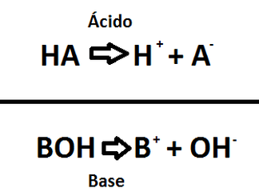
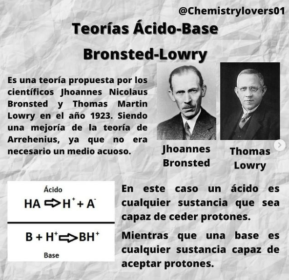

Teorías de ácidos y bases
A lo largo de la historia, se han propuesto varias teorías para definir ácidos y bases. Las principales teorías son las siguientes:
• Teoría de Arrhenius (1884)
Los ácidos son sustancias que liberan iones hidrógeno (H+) en solución acuosa, mientras que las bases son sustancias que liberan iones hidróxido (OH-) en solución acuosa.

Imagen recuperada de: https://es-puraquimica.weebly.com/arrhenius.html
• Teoría de Brønsted-Lowry (1923)
Los ácidos son sustancias que pueden donar protones (H+), mientras que las bases son sustancias que pueden aceptar protones.

Imagen recuperada de: https://www.instagram.com/p/CFP7tGYDQKl/?img_index=1
• Teoría de Lewis (1923)
Los ácidos son sustancias que pueden aceptar pares de electrones, mientras que las bases son sustancias que pueden donar pares de electrones.